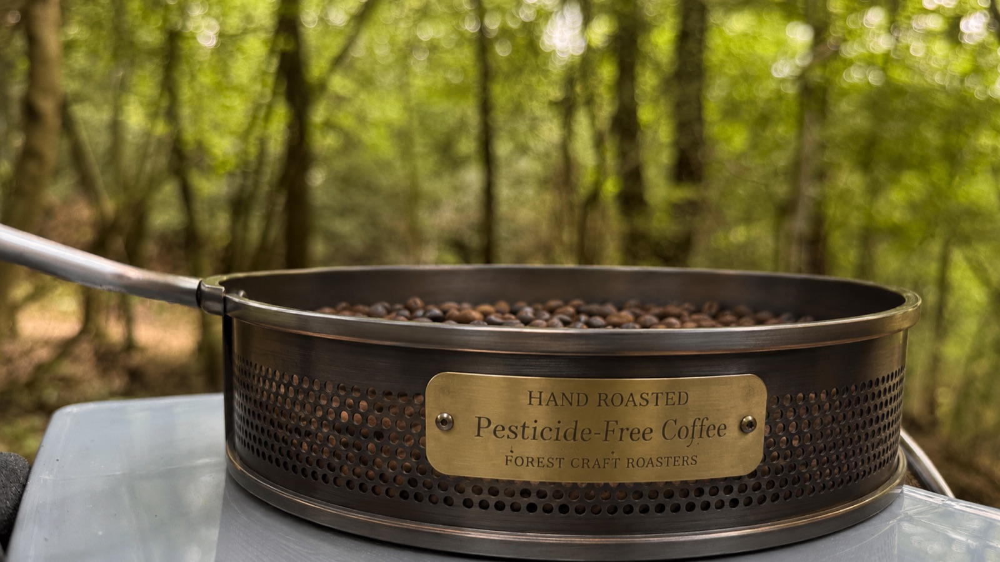

森の中で、
一粒一粒を
手で焼く。
人里離れた、岐阜・瑞浪の森から。
掌焙煎、それだけのコーヒー。
その日の気温と、豆の声を聞きながら。
concept
機械も、添加物も、使いません。
掌と炎と、手の感覚だけ。
良い豆を、正直な方法で焼く。
それが杜花のすべてです。

花のような香り、柑橘の余韻。
焙煎するたびに表情が変わる。
一番好きな豆です。
甘く、まろやか。
誰にでも寄り添う、
やさしいコーヒー。
ナッツの香ばしさ、
深くて落ち着いた苦味。
朝に飲みたい一杯。
process
その日の気分と季節で
豆を決める。
正直な選択。
手を止めずに振り続ける。
音と色と香りで
焼き加減を知る。
焙煎日をそのまま記す。
鮮度と正直さが
唯一の包装。